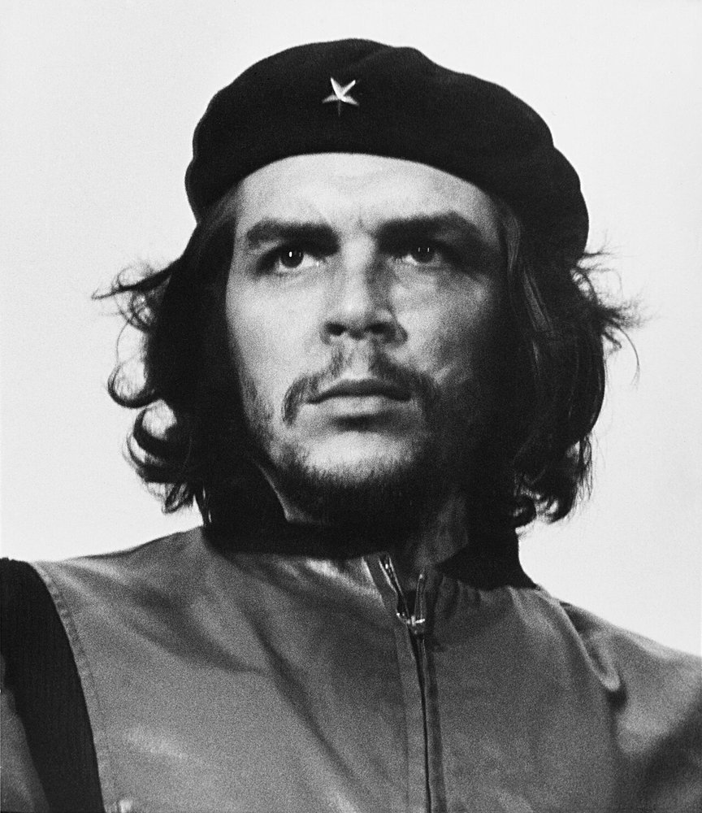

Guerrillero Heroico
Alberto Korda · 5 March 1960 · Gelatin silver print, printed 1985 · 23.9 × 17 cm
In copyright. Look and learn: shown for study, not for download.
Alberto Korda took two frames of Che Guevara from about nine metres away on 5 March 1960, at the funeral for the victims of the La Coubre explosion, using a Leica M2 with a 90 mm lens. His editor at Revolución sent the picture back unused, and Korda cropped it and hung it on his own wall. It was first printed in the paper on 16 April 1961 and stayed little known for seven years. Korda never asked for royalties. This gelatin silver print was made in 1985.